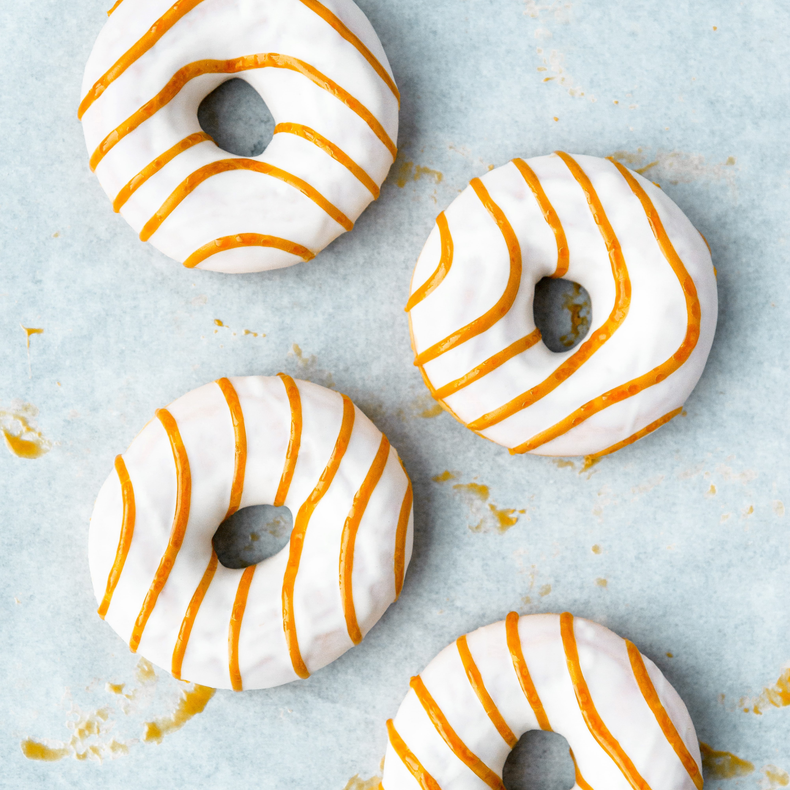

Baked Pumpkin Donuts

Description
I’ve never made successful baked pumpkin donuts before this year. Until I began to think a little more clearly, previous attempts have resulted in flavorless donut-shaped orange circles. My mini cinnamon sugar pumpkin muffins are donut-like, but it wasn’t until I transformed my favorite pumpkin muffins into cake-like donuts that I was truly satisfied with a traditional pumpkin donut. Um hello? Why didn’t I do that sooner? Regardless, this pumpkin donut recipe is certainly worth the wait!
Ingredients
- 1 and 3/4 cups (219g) all-purpose flour (spoon & leveled)
- 1 teaspoon baking powder
- 1 teaspoon baking soda
- 1/2 teaspoon salt
- 1 and 1/2 teaspoons ground cinnamon
- 1 teaspoon pumpkin pie spice
- 1/2 cup (120ml) vegetable oil (or canola oil or melted coconut oil)
- 3/4 cup (150g) packed light or dark brown sugar
- 2 large eggs, at room temperature
- 1 cup (227g) fresh or canned pumpkin puree
- 1/3 cup (80ml) milk
- 1 teaspoon pure vanilla extract
- 3/4 cup (150g) packed light or dark brown suga
- 1/4 cup (60ml) milk
- 1/2 teaspoon pure vanilla extract
- 1 and 1/2 cups (175g) sifted confectioners’ sugar
- 1 Tablespoon (14g) unsalted butter
- pinch of salt, to taste
Instructions
- Preheat oven to 350°F (177°C). Spray donut pan with non-stick spray. Set aside.
- Make the donuts: Whisk the flour, baking powder, baking soda, salt, cinnamon, and pumpkin pie spice together in a large bowl until combined. Set aside. In a medium bowl, whisk the oil, brown sugar, eggs, pumpkin puree, milk, and vanilla extract together until combined. Pour the wet ingredients into the dry ingredients, then fold everything together gently just until combined and no flour pockets remain.
- Spoon the batter into the donut cavities or for ease, I highly recommend using a large zipped-top bag. Cut a corner off the bottom of the bag and pipe the batter into each donut cup, filling about halfway.
- Bake for 10-11 minutes or until the edges and tops are lightly browned. To test, poke your finger into the top of the donut. If the donut bounces back, they’re done. Cool donuts in the pan for 2 minutes then transfer to a wire rack. Re-grease the pan and bake the remaining donut batter. *For mini donuts, bake in a mini donut pan for 8-9 minutes. Cool donuts for at least 10 minutes before icing them.
- Make the icing: Combine the brown sugar, milk, and butter in a medium saucepan over medium heat. Stir until the butter has melted and mixture is smooth. Bring to a simmer. Allow to simmer for 1 minute then remove from heat and whisk in the vanilla extract and sifted confectioners’ sugar until smooth and combined. Taste, then add a pinch of salt if desired– I always add a tiny pinch. Let the icing cool for 5 minutes to slightly thicken. Dip the tops of the pumpkin donuts into the warm icing. If icing is getting too thick as you’re dipping, add a little more milk or warm back up in the microwave or on the stove to thin out. Place dipped donuts on a wire rack placed on a baking sheet so any excess icing can drip off. Top with chopped nuts or other toppings if desired. If applied lightly, the icing will eventually set in about 1 hour so you can stack or transport the donuts.
- Cover leftover donuts tightly and store at room temperature for 1-2 days or in the refrigerator for up to 1 week.